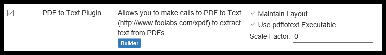

Detailed TOC for 'Appendix - Data Plugins - General Information'
- Introduction
- Plugin Types
- Available Plugins
- Tika (Document Builder)
- Excel Classification/Parsers (Document Builder)
- PDF to Text (Document Builder
- Google Tesseract OCR (Document Builder
- Text Classification/Parsers (Enricher)
- MS Word Classification/Parsers (Builder)
- Python (Document Enricher)
- Groovy (Document Enricher)
- Simple Keyword Feature Plugin (Enricher)
Appendix – Data Plugins
Introduction
The Pendo Digital Data Discovery Platform’s architecture supports Plugins. Among other benefits, this allows Pendo Systems to both enhance existing features and incorporate brand new functionality, often without needing a full release. This section will walk through some of the different types of Plugins and how they fit together and work.
A Plugin typically focuses around enabling a specific function. Each Plugin has a name and a version number. Data related Plugins usually support one of the extension points detailed below.
It is recommended that you read Appendix – Unstructured Data Handling on the PD3P to get a handle on some concepts and terminology.
IMPORTANT NOTE: When Importing or Editing Unstructured Data Sets, you must ensure that at least one Plugin that is a Document Builder is selected so that the Indexing will work. Please see below for your options. When in doubt, select Tika Document Builder as you can always change your mind and select a different or additional Document Builder later.
Plugin Types
Builder
A Document Builder is an extension point that allows a Plugin to work as part of the indexing process for unstructured data. When any unstructured Data Source is being indexed, each data file that is found is passed to all the Document Builders that are enabled on the Pendo Digital Data Discovery Platform. This means that if you have a Document Set that has multiple Plugins enabled, each Document Builder will create its own separate ‘document instance’ within the index.
To clarify, a single data file, e.g. a spreadsheet, may have several ‘document instances’ within the index.
Since each ‘document instance’ was created by a different Document Builder Plugin, it has different data from or about the original file.
Indexer
An Indexer allows a Plugin to define the back-end support for storage of Unified Search indexes. Typically, the PD3P ships with the ElasticSearch Indexer Plugin in place.
Enricher
The purpose of a Document Enricher is to allow a Plugin to add additional information to a Document Instance created from unstructured data. Each time a Document Builder creates a Document Instance it is passed to all the registered and enabled Document Enrichers. A Plugin can register a Document Enricher.
For example, you might use a PDF to Text Extractor’ _Plugin to look at a PDF document to see if the PD3P can extract all text and store them in the structuredContent section of the Document Instance. Another common example of an Enricher is a scripting Plugin (such as Groovy or Python), useful when you want to manipulate the Document Instance that a Builder has created before writing it to the Indexer.
Comparator
A Plugin can also register any number of Comparators that can be used in Relationship Discovery Projects. See Comparator Selection for details on Comparators available to you in the Pendo Digital Data Discovery Platform.
Cleaner
A Plugin can also register any number of Cleaners that can be used in Relationship Discovery Projects. See [Cleaning Selection]{appendixrelationship.md#cleaning-selection} for details on Cleaners available to you on the _Pendo Digital Data Discovery Platform.
Available Plugins
Tika (Builder)
The Tika Plugin uses Apache Tika to support parsing of a wide range of document types for metadata and content. It can be used as a Document Builder and pulls all text content from the documents. It can also be configured to extract metadata (such as the author, date of creation, date last modified) into the metadata section of the unstructured document index or extract as XML rather than text.
Excel Classification/Parsers (Builder)
This powerful Plugin serves multiple purposes.
It converts Excel© spreadsheet into cells in structured content by working with the Classification component. If you are working with spreadsheets and you want to extract data, you must select this Plugin and then work with the Classifications component.
This Plugin is also special Document Builder that is able to turn Excel© files into a hierarchical XML structure that matches the cells from the spreadsheet workbook. This can be used with an ExcelHelper (also part of the same Plugin) to script a Document Enricher such as Groovy or Python Plugins to support capturing information from the Excel© spreadsheet into the structured content part of the indexed document instance.
For instruction on how to use this Plugin, see Appendix - Using the Excel Plugin.
PDF to Text (Builder)

- This Plugin is geared to those PDFs that do NOT have images in them.
- You must also use the Test Classification/Parser in order to parse PDF documents. In essence, it is a Document Builder.
- Please be sure to at least check 'Use pdftotext Executable'.
- 'Maintain Layout' will make things much easier for a human to read.
Google Tesseract OCR (Document Builder)
PDF files that have scanned images of text are supported using this Plugin.
This plugin is still being explored fully, including preprocessing, processing and post-processing options. Several parameters for the ‘Google Tesseract OCR’ plugin are available. The parameters for this plugin are under constant refinement and experimentation, with items being added and removed based upon success rates experienced by Platform users.
- Remove Horizontal Lines - this would include underlines, standalone lines as well as the horizontal lines that are part of a box around some text.
- Remove Vertical Lines - this would include standalone lines as well as vertical lines that are part of a box around text.
Hint - the use of both of the above options should remove all boxes around text. - 'Convert Full pages' to images allows the Platform to display images of each page in the Preview mode of a Search screen.
- Store Thumbnails
- Text Only: Working with the existing Text Classification/Parser Plugin, this option deals with text embedded within image files such as TIF, JPG and PNG. For example, a PDF file may contain 10 pages each of which has a image that contain text.
- Maintain Text Layout allows for text to be more easily read by
humans. - Tesseract Properties - allows for permitted Tesseract keys and the desired values of those keys to entered.
- Save Preprocessed Image Path - used for debugging purposes, intermediate images resulting from various points of the overall process may be saved to a desired location to aid in tweaking various other parameters.
- Process Script - any user provided script that may be used during the overall process may be entered here.
- DPI refers to 'Dots Per Inch'. As the Optical Character Recognition (OCR) scans the image in a source file, this setting determines the quality of what is scanned in, assisting the OCR in determining what the input image is and what to character to store as output. Pendo suggests setting a minimum DPI of 600 for optimum balance of clarity and size.
- Select the Image Type that best reflects the content of the source document. In almost all cases, Black and White would be the selection scanned documents such as contracts, loans, etc.
- Black and White - Documents with only black and white.
- Gray - Often, scanned images of text that had highlights in it before it was scanned will show up as shades of gray. This selection can help deal with that issue.
Text Classification/Parsers (Enricher)

This Plugin supports Classification based on text, and enrichment with intelligent text structure. This Plugin works in conjunction with Builders such as OCR, PDF To Text and Tika.
The only option for this Plugin is the Max Line Length. This has been set with a default of 15,000 characters in order to ensure that the parser will then break up lines that are longer than this to prevent oversized tokens breaking the indexing.
Using the Text Classification/Parsers for Mapping in a Classification lets you use a Line Query in Markers. In Mappings, you may select RegEx or Text Anchor/Offset. Here you may take advantage of Text Expressions as well as a series of more simple navigation options. An example would be down().value, meaning go down from the anchor one line and get what is there.
MS Word Classification/Parsers (Builder)
Supports Classification based on Microsoft Word providing enrichment with intelligent text structure.
Python (Enricher)
This Plugin adds a Document Enricher that allows for Python scripting. The script will automatically have the document instance created by the Document Builder as a variable called ‘instance’ that you can use in the script.
The Python Plugin also adds a Python Comparator and Python Cleaner allowing you to use Python to script these functions. The Cleaner Python script will have a value variable that you can change to represent the cleaned value.
Groovy (Enricher)
This plugin adds a Document Enricher that allows for Groovy scripting. The script will automatically have the document instance created by the builder as a variable you can use in the script called instance.
The Groovy Plugin also adds a Groovy Comparator and Python Cleaner allowing you to use Python to script these functions. The Cleaner Groovy script will have a value variable that you can change to represent the cleaned value.
For the Comparator, the script needs to return the similarity as a double representation between 0-1.
Simple Keyword Feature Plugin (Enricher)

This plugin allows you get a visual representation of various data points in a Document Set via new features in a Search screen. Please see ‘Search’ above for more information on how to see the output of the option. Among other sub-options being introduced in the ‘Cluster View’ of a Search result, there is a 'keywords' option.
In order to use this feature you would enter as many Keywords as desired into the new Plugin and Rebuild Index for each Document set involved. Depending on the file type of the Document Set, you also need to ensure the following Plugins are also being used.
- For Excel to work with keywords, the ‘Extract Text Representation’ option must be checked.
- For regular (non-image) pdfs - the ‘PDF to Text’ Plugin must be invoked.
- For PDFs with images, both the ‘Google Tesseract OCR’ plugin and the ‘Text Classification/Parser Plugin’ must be invoked.